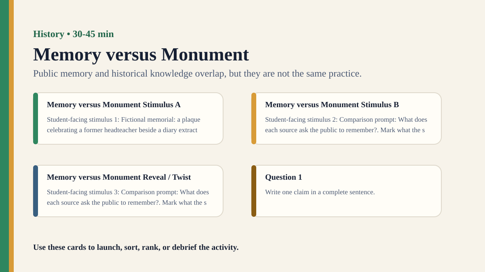

Premium draft resource
Memory versus Monument Classroom Run Kit
Students compare personal memory, public memorials, and archival evidence as different ways of knowing the past.
Back to Memory versus Monument
One-Minute Teacher Brief
Students compare personal memory, public memorials, and archival evidence as different ways of knowing the past.
Big idea: Public memory and historical knowledge overlap, but they are not the same practice.
Student Prompt
Inspect Memory versus Monument Stimulus A. Record one first claim, the evidence you used, your confidence, and what would make you revise.
Concrete Stimulus Packet
Stimulus
Memory versus Monument Stimulus A
Student-facing stimulus 1: Fictional memorial: a plaque celebrating a former headteacher beside a diary extract from a student and a board meeting note. Mark what the source shows, what it omits, whose perspective appears, and what claim it can responsibly support.
Students inspect this exact card first and commit to a claim before hearing anyone else.Stimulus
Memory versus Monument Stimulus B
Student-facing stimulus 2: Comparison prompt: What does each source ask the public to remember?. Mark what the source shows, what it omits, whose perspective appears, and what claim it can responsibly support.
Use this for comparison, a second round, or a partner challenge.Stimulus
Memory versus Monument Reveal / Twist
Student-facing stimulus 3: Comparison prompt: What does each source ask the public to remember?. Mark what the source shows, what it omits, whose perspective appears, and what claim it can responsibly support.
Teacher reveal: connect the changed response to the big idea — Public memory and historical knowledge overlap, but they are not the same practice.Actual Lesson Questions
| # | Question for students | Teacher key / cue |
|---|---|---|
| 1 | After inspecting Memory versus Monument Stimulus A, what is your first knowledge claim? | Teacher cue: look for a clear claim, not just a description. |
| 2 | Which exact detail from Memory versus Monument Stimulus A did you use as evidence? | Teacher cue: students should name visible words, data, source features, method features, or contextual clues. |
| 3 | What did you infer beyond the evidence? | Teacher cue: this is where assumptions, framing, models, or perspective usually appear. |
| 4 | How confident are you: 50%, 60%, 70%, 80%, 90%, or 100%? | Teacher cue: confidence is data for the debrief, not a grade. |
| 5 | What missing information would most improve the knowledge claim? | Teacher cue: push for method, source, context, comparison, or definitions. |
| 6 | How is public memory different from historical knowledge? | Teacher cue: students should move from the classroom example to a general TOK issue. |
Student Task
Use the stimulus cards to complete the observation/inference/evidence/confidence grid, then answer one TOK knowledge question connected to History.
Teacher Key / Reveal
The key move is not the “right answer”; it is the moment students see how public memory and historical knowledge overlap, but they are not the same practice.
- Strong response: separates observation from inference.
- Strong response: names a method, source, model, language choice, context, or perspective.
- Strong response: revises confidence when new evidence or a new criterion appears.
- Weak response: gives only opinion or says “it depends” without criteria.
Classroom materials
Printable Pack and Cards
Open the classroom resource pack for stimulus cards, CSV card deck, and the activity visual prompt.
Visual Prompt

Setup Checklist
- Use a local or familiar memorial only if the class context is suitable; otherwise use a fictional school memorial.
- Prepare three sources with clearly different purposes.
Ready-to-Use Examples
- Fictional memorial: a plaque celebrating a former headteacher beside a diary extract from a student and a board meeting note.
- Comparison prompt: What does each source ask the public to remember?
Run Resources
- Source comparison chart: purpose, evidence, emotion, omission, reliability.
- Memory/history Venn diagram.
Teacher Language
- A memorial is not a textbook page; it is a public act of selection.
- What kind of truth is the memorial trying to preserve?
Sample Student Output
- The plaque communicated gratitude, while the archive showed conflict and compromise.
- The memorial was evidence of values as much as evidence of the event.
Procedure
- Show a memorial image and ask what knowledge it seems to communicate.
- Give a personal memory and an archival source about the same event.
- Students compare purpose, evidence, emotion, and omissions.
- Groups decide what each source helps us know and what it cannot settle.
- Debrief the difference between remembering and explaining the past.
Debrief Questions
- Knowledge question: How is public memory different from historical knowledge?
- Can a monument be evidence, interpretation, and argument at once?
- Whose responsibility is it to revise public memory?
Adaptations
- Support: use a fictional school example.
- Challenge: include two public audiences with competing needs.
Extension Tasks
- Students design a revised plaque with a short note about what it includes and excludes.
- Connect to debates about museums, statues, and national memory.